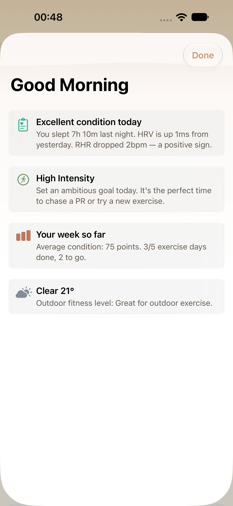
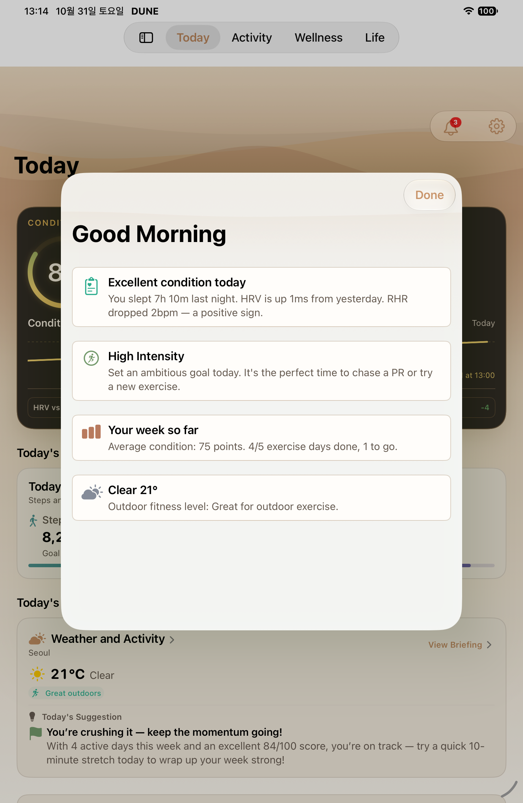
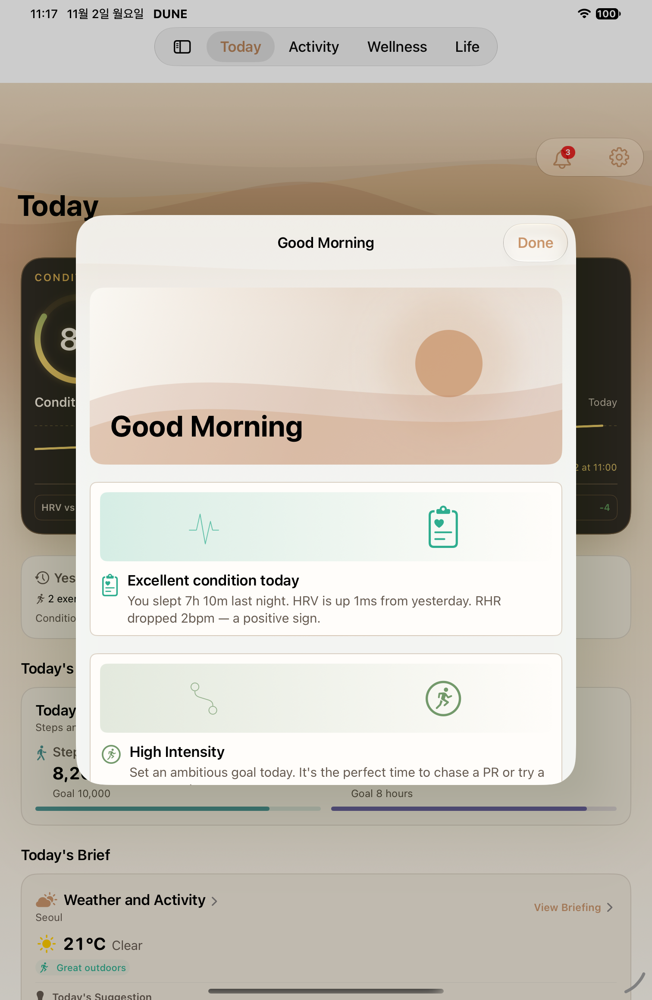
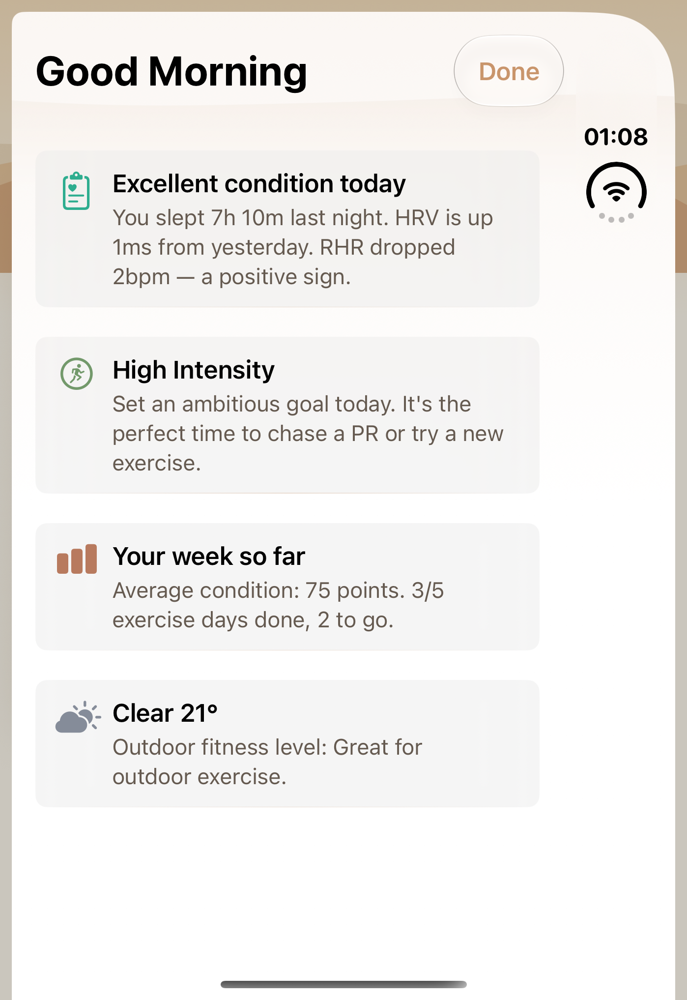
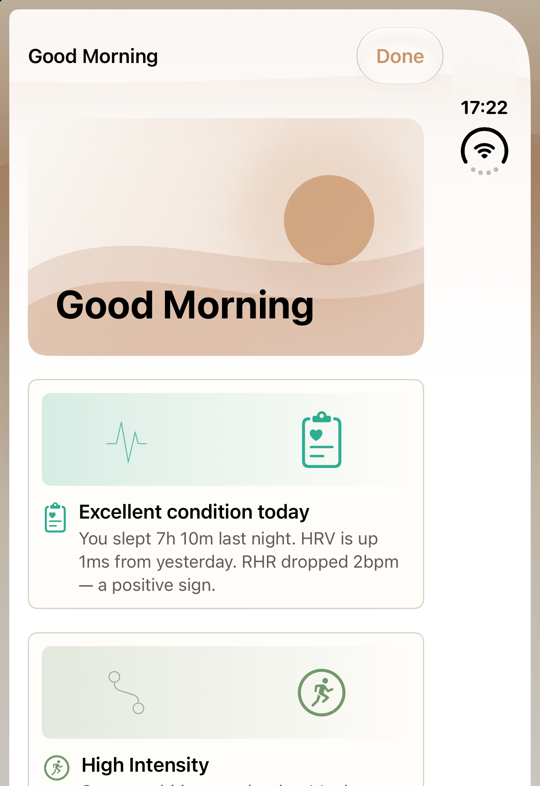
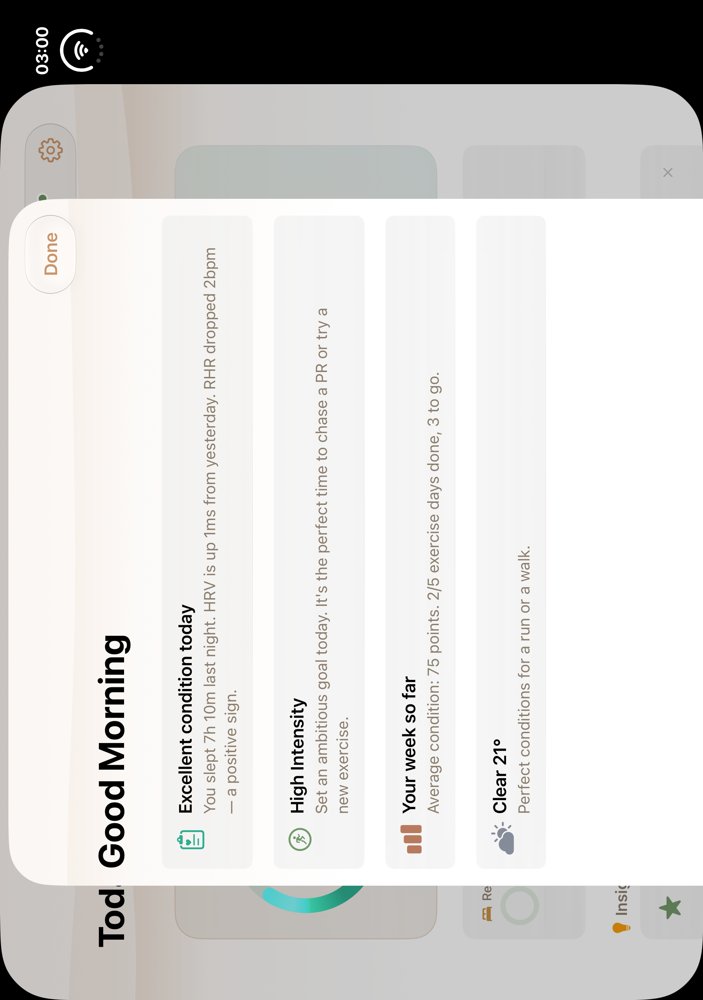
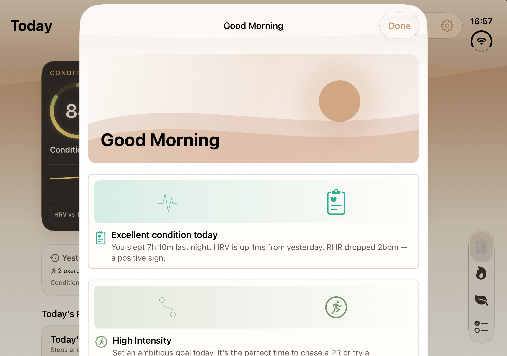

T09 · 모닝 브리핑
실제 앱의 기존·개편 화면을 원본 그대로 비교합니다. 일반 iPhone·iPad·Duo 접힘·펼침의 실제 자료를 정식 맵의 T09 네 행에 반영했습니다.
기존 화면의 회복·가이드·주간·날씨 정보를 보존하고 일출 히어로와 분류별 삽화를 추가했습니다. 큰 글씨에서는 장식 삽화를 줄이고 제목·본문을 세로로 배치합니다.
iPad 전후는 같은 기기이며 날짜가 다릅니다. 기존 10월 31일 주간 4/5와 개편 11월 2일 1/5는 같은 숫자를 기대하는 비교가 아닙니다. 기존 Duo의 회전된 상태 표시도 원본 그대로 보존합니다.
새 Duo 펼침은 180°·LCD-1 활성·유효 ACK 8회를 확인한 실제 PNG입니다. 추가 승인 1회는 사용되어 남은 횟수는 0입니다. 이전 실패 2건과 미확인 ID는 출처에 남겼습니다.
일반 iPhone
일반 iPhone · 기존
이미지별 정확한 소스 미확인 · 2026-10-22T00:48:25.786000+09:00
1320×2868 · SHA256 3780e0a71b824773c548be44b6ad85f1e7d4168483ddcfc3a8fb2caa3268688a
historical-capture-index timestamp; native attachment not independently relinked일반 iPhone · 개편94d7a48b · 2026-11-02T17:27:32.118000+09:00
1320×2868 · SHA256 f6a4b4b728a2464b6a6b13ccbf16f0854063a4bbc862d850e7039c4ecf6f3626
native-XCTest-attachment 새 원본 94d7a48b · 11월 2일 · iPhone 18 Pro Max · 기본·어두운 최대 접근성 글씨 검사 2건 통과. 아래에 실제 T09 제목·본문 촬영 자료를 연결했습니다.
iPad
iPad · 기존
1f7f9900 · 2026-10-31T13:14:00.906000+09:00
1512×2316 · SHA256 de9a116dea57ae249c395680146d3d5d92bbd4bf637bca44bd6bf975e4e6b13d
native-XCTest-attachmentiPad · 개편
fd227b54 · 2026-11-02T11:17:46.574000+09:00
1512×2316 · SHA256 634fcb85ee11250c3cb94ab40a964c907c414e1fd5417fba4e9956a7140669b1
native-XCTest-attachment 원본 1f7f9900 · 10월 31일 → 개편 fd227b54 · 11월 2일. 같은 iPad UDID이며 실제 촬영 시각·주간 숫자의 차이를 유지했습니다. 기본·어두운 최대 글씨 검사 2건이 통과한 자료입니다.
Duo 접힘
Duo 접힘 · 기존
이미지별 정확한 소스 미확인 · 2026-10-22T01:08:26.433000+09:00
1398×2034 · SHA256 b7cf3d64395296d5646128e5a4091ac8dd8722286c9b20fe04157796671e9d41
historical-capture-index timestamp; native attachment not independently relinkedDuo 접힘 · 개편
94d7a48b · 2026-11-02T17:22:03.320016+09:00
1398×2034 · SHA256 dabacf05a5a9903d41859a97e15325c1dddc3057b142d64ce73c740eff5c4855
host-file-mtime of paired native PNG; not attachment time or checkpoint deadline 새 원본 94d7a48b · 11월 2일 · 1398×2034 · 각도 전후 0° · 활성 LCD. 기본 분류·닫기 검사 1건 통과, 유효 ACK 8회. 첫 실패를 보존하고 검토한 도구 복구 패치의 조건부 재시도 1회를 사용했습니다.
Duo 펼침
Duo 펼침 · 기존
이미지별 정확한 소스 미확인 · 2026-10-13T03:00:10.369000+09:00
2006×2852 · SHA256 28852660882ef84d67ec60b147796924ffe6da437e1b918e134637af7812ff54
historical-capture-index timestamp; native attachment not independently relinkedDuo 펼침 · 개편
31718cae · 2026-11-02T16:57:22.110863+09:00
2853×2007 · SHA256 973af5dfc613d37ce7f0f4070b5cad53ac1522005d2cc1f24f87dbc8ece96246
host-file-mtime of paired native PNG; not attachment time or checkpoint deadline 새 원본 31718cae · 11월 2일 · 2007×2853 · 각도 전후 180° · 활성 LCD-1. 기본 분류·닫기 검사 1건 통과이며 전체 상태·큰 글씨 검증을 뜻하지 않습니다.